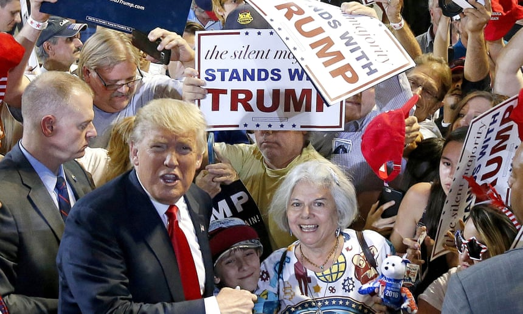

 Its all begins with the mother. Rob Goldstone on Trump: 'I think he likes Russia because Russia liked him' Read more This is the opening line of Dr Justin Frank’s book, Trump on the Couch, “a deep dive into the psyche” of the 45th US president which argues that a distant mother and authoritarian father are key to understanding how Donald Trump became Donald Trump: infantile, impulsive and ill-suited for office. “Yes, we should be scared,” Frank, a clinical professor of psychiatry at George Washington University, told the Guardian. “We have to accept that he is the president and we also have to accept that he’s never going to change because he can’t. Once we accept those things, we can then figure out what to do with our fears.” For Frank, the dynamic between infant and mother has a profound influence on a person’s psychological outlook and health. Trump’s mother was Mary Anne MacLeod, who arrived in New York from the Outer Hebridean island of Lewis in 1930. After six years as a domestic worker and nanny, she married the property developer Fred Trump and they had five children. The otherwise garrulous president has said little about his mother. Notably, for his first few months in the Oval Office, the only photo behind his desk was of his father. His mother was added later. Yet, Frank points out, 72-year-old Trump’s gravity-defying hair is a very deliberate homage to his mum’s. Donald Trump with his sister and mother at Mar-a-Lago in 1995. Facebook Twitter Pinterest Donald Trump with his sister and mother at Mar-a-Lago in 1995. Photograph: Davidoff Studios Photography/Getty Images “The fact that he tries to get us to feel his anxiety and he externalises responsibility makes me feel that, as a young child, he did not feel contained or held by his mother or other caretakers,” he says. “He didn’t have a strong maternal force in his life. “The one thing we do know biographically is that when he was two, the last child in the family was born, but when his mother went to the hospital she didn’t come home right away. She had a haemorrhage, she had four surgeries and came close to dying and there was virtually no talk about that in the family. His older siblings just went to school as if it were normal while they’re terribly worried about their mother.” His mother’s frequent absences, Frank suggests, left Trump devoid of empathy. “One of the things that you do when you’re feeling ignored and abandoned in some way,” he says, “is develop contempt for that part of yourself. You have the hatred of your own weakness and you then become a bully and make other people feel weak, or mock other people to make it clear that you’re the strong one and that you don’t have any needs. “In fact, at one of his rallies recently somebody was complaining about something and he said, ‘Why don’t you go home to your mommy?’ I was struck that he must have been reading my book.” Frank adds: “That’s why I think some of his relationships with women are not just based on sex. It had to do with a real contempt for women’s boundaries and autonomy because he’s so angry and so bereft and I think that’s so deeply unconscious.” Fred Trump: ‘A kind of tyrant’ Trump on the Couch is the third in Frank’s series of psychoanalytic presidential profiles, following Bush on the Couch and Obama on the Couch. It draws on two years of study of Trump’s tweets, speeches, interviews and overall behaviour to conclude that he is “mentally unfit” and “psychologically unsuited” to the presidency. The approach represents a break from the “Goldwater rule”, the principle that bars psychiatrists from giving professional opinions about public figures without examining them in person. Frank suggests that Trump’s authoritarian father was also a formative influence on his childhood in Jamaica Estates in Queens, New York. Trump talks to his father, real estate developer Fred C Trump, in the 1980s. Facebook Twitter Pinterest Trump talks to his father, real estate developer Fred C Trump, in the 1980s. Photograph: Bernard Gotfryd/Getty Images Sign up for Bookmarks: discover new books in our weekly email Read more “When his father was there,” Frank says, “he ran the house like a kind of a tyrant, where there were so many rules that everybody had to do what the father said. [Donald Trump] was, I think, frightened of his father. His father would take him aside and say, ‘You have to be strong. You have to be tough. Never apologise. Never complain. Never say you’re sorry. You have to learn to be a killer. You have to be a king.’ It’s over and over again, drilled into him. “But it didn’t work when he went to school, and his father actually joined the school board because he thought maybe he could help control things – but he couldn’t. When he was about 10, 11, 12, Donny would sneak into New York in a delinquent way and go to shows with a friend of his. Then he saw West Side Story and that got him very excited. He decided to start buying switchblades and developed a fairly elaborate collection of large ones and his father eventually found out and just read them the riot act and made arrangements to send him off to military school.” People unconsciously repeat inner conflicts that they’ve had that didn’t get resolved when they were younger Dr Justin Frank Trump manifests what Sigmund Freud identified as “repetition compulsion”, the author continues. “People unconsciously repeat inner conflicts that they’ve had that didn’t get resolved when they were younger,” he says. “Trump is re-enacting his teenage impeachment fears and is now doing it with [special counsel Robert] Mueller and all these people. He was going to do everything he could to sneak into Manhattan to undermine his father to do whatever he wanted, and now he’s doing it with Mueller. Instead of being thrown out of the Jamaica Estates, he’s afraid of being thrown out of the White House.” Frank has more than 40 years of experience in psychoanalysis but he acknowledges that he has never encountered a subject like Trump. “He is infantile. He’s dominated by impulses, by suspicion, by a need to always win, by a fantasy that he has to do everything himself, which is what you see in children when they say: ‘Don’t help me, mommy. I’m going tie my own shoes.’ Then you wait for 45 minutes for the shoes to get tied before you can get out of the house. He’s, like, anti-dependent.” Does he think Trump is capable of feeling love? “No. He needed his first wife, Ivana, but once they got together he really needed her to be subservient to him, like many men do. So I don’t know about love or real, deep concern for her wellbeing. Love involves being able to have ruth, as opposed to being ruthless. Being able to feel concern and care, and I just don’t think he had that. Donald Trump: the making of a narcissist Read more “I also don’t think he ever felt loved and I think that’s also partly why he tweets so much and has to say ‘I’m getting an A+ as president’ so often, because if he didn’t get love outside, he’s going to compensatorily love himself. ‘If don’t get love from you guys, I know I’m the best.’” ‘Unconscious incestuous fantasy’ Frank devotes a chapter to the psychology of sexism and misogyny. In it he notes that Trump reportedly told the model Karen McDougal and the porn star Stormy Daniels, with whom he is alleged to have had affairs, that they reminded him of his daughter Ivanka. The psychoanalyst suggests this enabled Trump to enact “an unconscious incestuous fantasy” and use the image of his daughter as “a kind of psychological Viagra”. Ivanka Trump speaks, Donald Trump listens. Facebook Twitter Pinterest Ivanka Trump speaks, Donald Trump listens. Photograph: Andrew Harnik/AP Trump’s body and verbal language around Ivanka has often been unsettling. “I think that he does have an erotic attachment to her,” Frank says, “but he leads with his unconscious so he doesn’t have to be dominated by it. If he gets it out of his system by saying it and joking about it, he doesn’t have to live with it and sit with it. It’s like releasing a pressure cooker. He has the courage of his neurosis.” Then there is the mendacity. According to the Washington Post, Trump has made more than 5,000 false or misleading claims since taking office. “I think that most of the time he does believe the things he’s saying,” Frank says, “because, at his deepest level, he lies to himself. The purpose of lying is to hide yourself, first, from others, but then at a deeper level to hide yourself from yourself. It’s rejection of learning and thinking. Rules remind him of having to accept truth Dr Justin Frank “He doesn’t want to look at who he is, so what he does over time is distort reality, and lying involves changing reality and making it into one’s own wish or fantasy. That’s where the term ‘fake news’ is so important, because he hates the fact that the news functions almost for him unconsciously like a Greek chorus. Part of his lying is also to deny rules and deny regulations, to deny laws, to deny limitations. It’s rejection of learning and thinking. Rules remind him of having to accept truth.” As for Trump’s scattergun tweeting, Frank has an unusual metaphor. “It’s a form of what I call the faecalisation of the environment. He is covering all of us with his productions, which I think unconsciously have a faecal quality. They’re smearing things in a playpen all over the place. It’s something that we see in young children who are both exuberant and angry at the same time.” He expands: “He talks about shithole countries, he talks about shit, he talks about dirty Mexicans, people who are dark and dirty. Those are all related to germ-phobia and related to his own fecal fantasies and issues.” Trump is the most powerful man in the world and arguably the strangest American president of all time. Yet novelists might struggle with his shallowness and lack of hinterland: he would not necessarily make a great literary character. Frank muses: “He’s quite two-dimensional. I don’t think I could really ever engage with him. I would not find him a good patient or subject for a novel. He doesn’t have the depth and I think that, if he were not president, I would never think twice about him.”
The confirmed death toll from the earthquake and tsunami that struck the Indonesian island of Sulawesi has risen to 832, and the vice-president, Jusuf Kalla, has warned it could reach into the thousands. More than 150 aftershocks followed the 7.5-magnitude earthquake and subsequent tsunami that hit Sulawesi on Friday, causing thousands of homes, hotels, shopping malls and several mosques to collapse. Of the fatalities, 821 were in the city of Palu, with 11 casualties so far recorded in Donggala, the worst-hit area, which is home to 300,000 people. Hundreds of bodies have been found on beaches and authorities fear many may have been washed out to sea. Speaking at a press conference, Sutopo Purwo Nugroho, the spokesman for the BNBP disaster agency, said the area affected was much bigger than originally thought. “The deaths are believed to be still increasing since many bodies were still under the wreckage while many have not able to be reached,” said Sutopo, emphasising that access to Donggala, as well as the towns of Sigi and Boutong, was very limited so the final death toll was impossible to predict. The city of Palu has been completely devastated by the earthquake and tsunami waves, which reached as high as six metres in some areas. In the city, partially covered bodies lay near the shore and survivors sifted through a tangled mess of corrugated steel roofing, timber, rubble and flotsam. One man was seen carrying the muddy corpse of a small child. “Many corpses are scattered on the beach and floating on the surface of the sea,” one local resident, Nining, told local media. The identified bodies are being buried in mass graves, Sutopo said. Sutopo confirmed there was no electricity in Palu and Donggala, while drinking water and fuel were running out. There was limited access to heavy equipment needed to help rescue efforts, so the search for people trapped in the rubble was mostly being carried out by hand. Rescue efforts are continuing for dozens of people still trapped in the collapsed ruins of the eight-storey Roa Roa hotel in Palu, with voices heard screaming from the wreckage. A 25-year-old woman was found alive during the evening in the ruins of the Roa-Roa Hotel, according to the National Search and Rescue Agency, which released photos of the her lying on a stretcher covered in a blanket. There were concerns about the whereabouts of hundreds of people preparing for a beach festival that had been due to start on Friday, a spokesman for the BNBP said. 1:00 Drone captures aftermath of tsunami on Indonesian island - video Aerial footage shows tsunami destruction in Sulawesi – in pictures At least 540 people had been badly injured, the agency said, as hospitals struggled to cope with the influx of casualties, setting up open-air clinics to treat the injured. Dwi Haris, who suffered a broken back and shoulder, rested outside Palu’s army hospital, where patients were being treated outdoors due to the continuing strong aftershocks. Tears filled his eyes as he recounted feeling the violent earthquake shake the fifth-floor hotel room he shared with his wife and daughter. “There was no time to save ourselves. I was squeezed into the ruins of the wall, I think,” said Haris, adding that his family was in town for a wedding. “I heard my wife cry for help, but then silence. I don’t know what happened to her and my child. I hope they are safe.” The Indonesian president, Joko Widodo, who visited the region on Sunday, said earlier the military was being called to the region to help search-and-rescue teams. Aerial footage shows tsunami destruction in Sulawesi – in pictures One of the first casualties of the earthquake, 21-year-old Anthonius Gunawan Agung, is being hailed a hero after he stayed in the air traffic control tower as the earthquake hit, to make sure that a flight to Bali could take off safely. Agung then jumped from the control tower as it was collapsing, but did not survive the fall. Many residents slept in makeshift shelters, terrified that the powerful aftershocks could topple their damaged homes. Villagers view a ship swept ashore by tsunami in Palu, Central Sulawesi, Indonesia. Facebook Twitter Pinterest Villagers view a ship swept ashore by tsunami in Palu, Central Sulawesi, Indonesia. Photograph: Rio Mario/AP Some voiced criticism of the agency that lifted the tsunami warning. The agency said it followed standard operating procedure and made the call to “end” the warning based on data available from the closest tidal sensor, about 125 miles (200km) from Palu. “We have no observation data at Palu. So we had to use the data we had and make a call based on that,” said Rahmat Triyono, the head of the earthquakes and tsunami centre at BMKG. He said the closest tide gauge, which measures changes in the sea level, only recorded an “insignificant” 6cm wave and did not account for the giant waves near Palu. We have heard nothing from Donggala and this is extremely worrying Jan Gelfand, Red Cross The tsunami was triggered by a strong quake that brought down buildings and sent locals fleeing for higher ground as a churning wall of water crashed into Palu. “We all panicked and ran out of the house” when the quake hit, said Anser Bachmid, a 39-year-old Palu resident. “People here need aid – food, drink, clean water.” Dramatic video footage captured from the top floor of a parking ramp in Palu, nearly 50 miles (80km) from the quake’s epicentre, showed waves bring down several buildings and inundate a large mosque. 1:06 Massive wave hits Palu in Indonesia – video About 17,000 people have been evacuated, the BNBP said. “This was a terrifying double disaster,” said Jan Gelfand, a Jakarta-based official at the International Federation of Red Cross and Red Crescent Societies. “We have heard nothing from Donggala and this is extremely worrying. There are more than 300,000 people living there. This is already a tragedy, but it could get much worse.” Friday’s tremor was also felt in the far south of the island in its largest city Makassar and on neighbouring Kalimantan, Indonesia’s portion of Borneo island. The initial quake struck as evening prayers were about to begin in the world’s biggest Muslim-majority country on the holiest day of the week, when mosques are especially busy. Indonesia is one of the most disaster-prone nations on earth. It lies on the Pacific “Ring of Fire”, where tectonic plates collide and many of the world’s volcanic eruptions and earthquakes occur. Earlier this year, a series of powerful quakes hit Lombok, killing more than 550 people on the holiday island and neighbouring Sumbawa. Indonesia has been hit by a string of other deadly quakes including a devastating 9.1-magnitude tremor that struck off the coast of Sumatra in December 2004. That Boxing Day quake triggered a tsunami that killed 220,000 throughout the region, including 168,000 in Indonesia.
Donald Trump’s high-stakes meeting with deputy attorney general Rod Rosenstein could be “pushed back another week” as the fight over supreme court nominee Brett Kavanaugh continues, the White House said on Sunday. ‘She was paid by the Democrats’: Trump fans on Ford and Kavanaugh Read more Rosenstein oversees the work of special counsel Robert Mueller, who is investigating Russian election interference, links between Trump aides and Russia and potential obstruction of justice by the president. Whether or not Trump will fire the deputy attorney general, and thereby endanger Mueller’s independence, has fuelled Washington gossip for months. Earlier this month, the New York Times reported that Rosenstein discussed wearing a wire to record conversations with Trump and the possibility of removing the president via the 25th amendment. Rosenstein denied the report. But last Monday he went to the White House, amid reports he was about to resign. Instead, a meeting with Trump, who was then at the United Nations in New York, was announced for Thursday. Trump said he would “prefer not” to fire Rosenstein but then the meeting was delayed to avoid a clash with the Senate judiciary committee hearing in which Kavanaugh and one of the women who have accused him of sexual misconduct, Dr Christine Blasey Ford, both testified. On Friday, Trump ordered a one-week FBI investigation of claims against Kavanaugh, further delaying a full Senate vote. Trump’s press secretary, Sarah Sanders, appeared on Fox News Sunday. Asked about the Rosenstein meeting, she said: “A date for that hasn’t been set, it could be this week, I could see that pushing back another week given all of the other things that are going on with the supreme court. 2:33 The strangest moments from Donald Trump's UN press conference – video “But we’ll see and I always like to keep the press updated.” Some reporters would contest that assertion: Sanders has not held a White House press briefing since 10 September. Host Chris Wallace asked why. Sanders said the scarcity of briefings was not due to a distaste for TV reporters “grandstanding”, although she said: “I won’t disagree with the fact that they grandstand.” Presidential peril: what happened when Trump made landfall at the UN Read more She then suggested direct contact between Trump and the press will increase. “The president does more Q A sessions than any president has prior to him,” she said, adding without citing evidence: “We’ve looked at those numbers.” Briefings will still happen, Sanders said, but “if the press has the chance to ask the president of the United States questions directly, that’s infinitely better than talking to me. “We try to do that a lot and you’ve seen us do that a lot over the last few weeks and that’s going to take the place of a press briefing when you can talk to the president of the United States.” Trump regularly takes questions when leaving the White House or participating in open sessions or press conferences with visiting dignitaries. Solo press conferences are rare. In New York this week the president perhaps demonstrated why, making a freewheeling and at times bizarre appearance before gathered reporters.